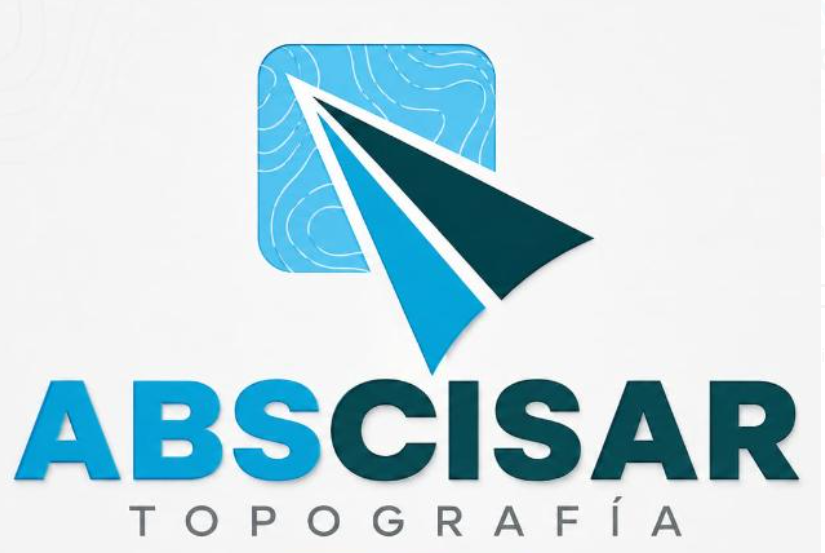

Generador de códigos QR
Acceso digital a los productos de tus proyectos
Tu código QR aparecerá aquí
ABSCISAR TOPOGRAFÍA · El enlace se procesa en tu navegador.

Acceso digital a los productos de tus proyectos
Tu código QR aparecerá aquí
ABSCISAR TOPOGRAFÍA · El enlace se procesa en tu navegador.